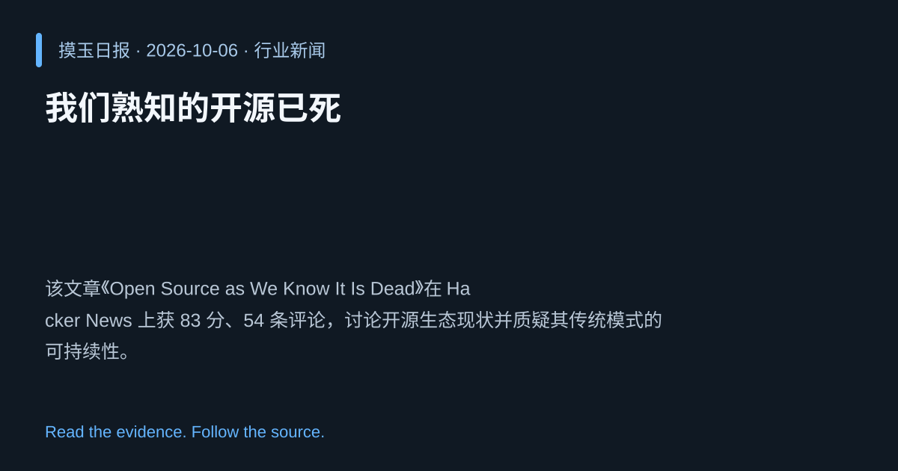

2026-10-06 · Asia/Shanghai · 行业新闻 · #5
我们熟知的开源已死
Open Source as We Know It Is Dead
该文章《Open Source as We Know It Is Dead》在 Hacker News 上获 83 分、54 条评论，讨论开源生态现状并质疑其传统模式的可持续性。
为什么值得关注
开源仍是技术创新基石，文章对其未来的质疑引发社区广泛关注。
- 文章指出传统开源模式正面临多重挑战。
- 在 Hacker News 上获得高分，表明议题激起热烈讨论。
- 促使业界思考开源的治理与可持续发展方向。

热度 52.7 / 100；排名与评分保留该期记录。